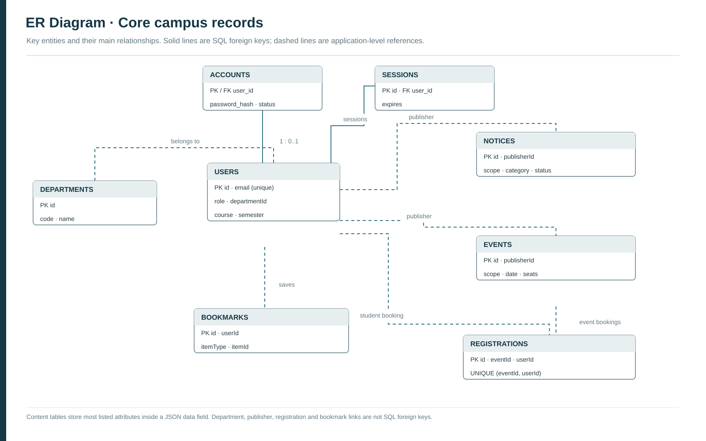
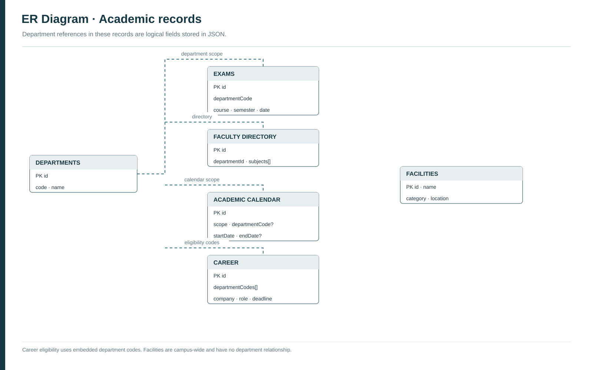
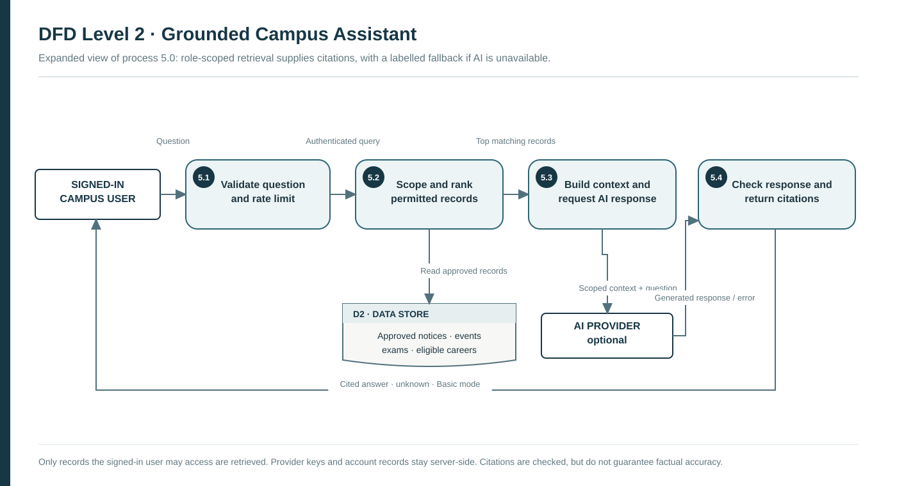

Figure 3. DFD Level 0 — System context
One process represents the complete CampusOne system

CampusOne overview · ER model and DFD Levels 0–2. Each figure reflects the implemented system.
Logical fields shown; dashed = JSON/application reference, solid = SQL foreign key

Companion to Figure 1; repeated USERS and DEPARTMENTS are the same entities

One process represents the complete CampusOne system
All protected operations apply server-side authentication, validation and role/scope checks

Decomposition of process 2.0 for faculty notices/events

Decomposition of process 4.0: seat changes and registration insert are atomic

Decomposition of process 5.0 for question answering; live provider evaluation is pending
